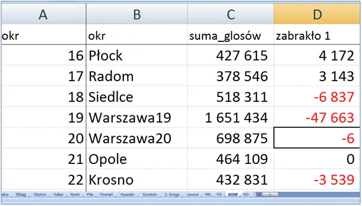
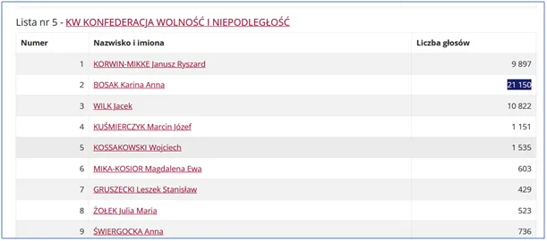
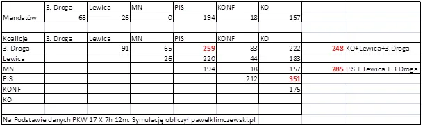
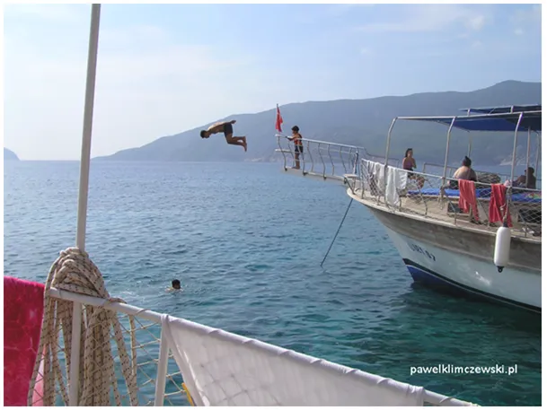

Władza leży na ulicy i na dyskach komputerów z danymi o Polakach.
Zapraszam do współpracy przed wyborami samorządowymi i kolejnymi do parlamentu. wybory@pawelklimczewski.pl
Mamy policzone ponad 21 mln głosów to wynik na serwerach PKW z 7: 12, 17 X 2023. Na ten moment pani Anna Bosak wchodzi do Sejmu 6 głosami. Konfederacja ma na ten moment 18 mandatów, czyli przez noc, po przeliczeniu 3 mln głosów 3 mandaty spadły.



W wielu okręgach Konfederacja nie dostała pierwszego lub drugiego mandatu z powodu braku zaledwie promili. Było to widać już kilka tygodni przed wyborami. Taka analiza jest znacznie tańsza niż jeden źle ulokowany billboard, a jednak nie było wielu chętnych, aby na miesiąc przed wyborami kupić analizę potencjału elektoratu z dokładnością do dzielnicy miasteczka czy wsi, a nawet ulicy.
Zapraszam do współpracy przed wyborami samorządowymi i kolejnymi do parlamentu.
Kandydując z Katowic i mając dane z badań na początku października pojechałem na urlop nad ciepłe morze, po sezonie to było tańsze niż skrawek banera przy drodze.

Paweł Klimczewski